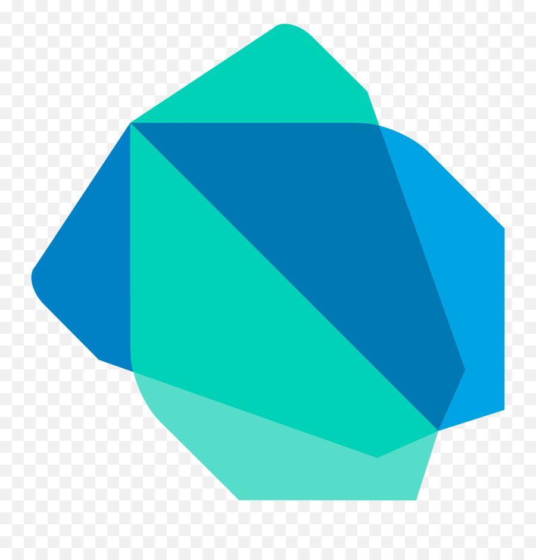
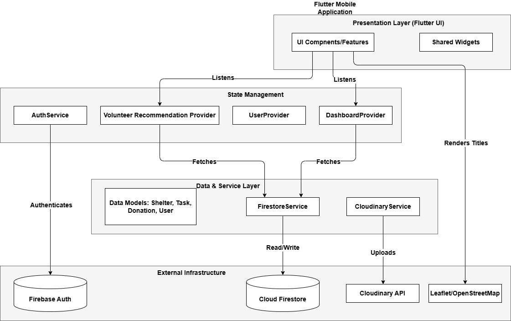

AI Recommendation
Automatically prioritizes volunteers by cross-referencing Skills, Urgency, Distance, and Shelter Occupancy.
Salamah is a Real-Time war Relief app designed to provide immediate coordination and Volunteers Recomendation
Shelter - War Relief & Safety.
This report discusses the creation of a cross-platform mobile application, Salamah, which is designed specifically for war relief coordination, with the goal of delivering an individualized, real-time system to help individuals in high-stakes environments during wars and crisis. The major goal is to develop a system that manages fragmented relief efforts through centralized logistical oversight. Unlike manual spreadsheet-based methods, this solution prioritizes data integrity and operational stability by implementing atomic transactions to manage shelter capacity and volunteer assignments. The system also adjusts to relief demands through role-based interactions, allowing it to optimize volunteer dispatching based on evolving site urgency. The project is intended to assist users with volunteer skill- matching, donation tracking, and shelter capacity management, without the logistical bottlenecks seen in traditional platforms. The solution overcomes the gap in existing crisis management tools using a 4- tier cascading recommendation engine, which provides an automated, real-time, and domain-specific coordination support. This effort will ultimately help to improve humanitarian feedback effectiveness through unique, secure, and reliable technical integration.
Providing a single source of truth for individuals affected by crisis through specific strategic goals.
Achieve high reliability in shelter coordination by implementing atomic operations for capacity tracking to provide instant updates and prevent overbooking.
Develop a matching algorithm that connects volunteers to shelters based on volunteer capabilities, availability, and specific shelter needs.
Enable shelter admins to create tasks that volunteers can claim, update, and track through to completion.
Develop the application using the Flutter framework to ensure support across Android, iOS, and Web.
Implement Firebase Firestore to achieve sub-second data propagation, ensuring all connected devices are synchronized in real time.
Design a feature-driven modular architecture that supports horizontal scaling and the rapid addition of new functionalities.
Automatically prioritizes volunteers by cross-referencing Skills, Urgency, Distance, and Shelter Occupancy.
Live monitoring of shelter capacity and flow dynamics to prevent overcrowding and ensure aid distribution.
Precision geolocation and coordinate mapping for accurate target zone identification and rescue operations.




The Salamah application provides critical insight into humanitarian aid logistics in high-stakes environments. The 4-tier cascading AI recommendation engine automates volunteer matching based on skills, request urgency, distance, and occupancy, reducing randomness and inefficiency. Integration of atomic Firebase transactions ensures data security and eliminates race conditions regarding shelter capacity. Despite challenges with real-time check-ins in conflict zones and complex shared access management, the application provide a centralizing coordination into a single source of truth, verifying role-based access control, maintaining professional design consistency, and reducing manual effort through high-speed data filtering.
Implementing multi-language support, including Arabic, and upgrading to a Google Maps API for high-fidelity routing and offline cache capabilities.
Improving the donation workflow with full traceability and validation, while enhancing the announcement feed with faceted filters for better usability.
Integrating a real-time WebSocket or Firestore-based chat service for secure, encrypted peer-to-peer communication.
Utilizing automation testing to ensure overall system stability.
Integrating deeper analytic dashboards to provide comprehensive insights into shelter operations.
Developing features to automatically analyze volunteer skills and assign tasks, alongside making the system more automated in general.
Implementing an emergency broadcast system to alert all users instantly during crises.
Maintaining the ability to add new functionalities to match evolving humanitarian needs and technical requirements.
This project is a Final Year Senior Project, Completed During Semester 2 of the Academic Year 2025/2026 At College of Information Technology - University of Bahrain.
| Name | Major | GitHub | ||
|---|---|---|---|---|
| Mohammed Kamel Ali | Computer Science | mohdkamil004@gmail.com | View Profile | View Profile |
| Mohammed Ammar Isa | Computer Science-Cloud Computing | mo.durazi.106@gmail.com | View Profile | View Profile |
| Name | Rank | |
|---|---|---|
| Dr. Hadeel AlObaidy | halobaidy@uob.edu.bh | Assistant Professor |